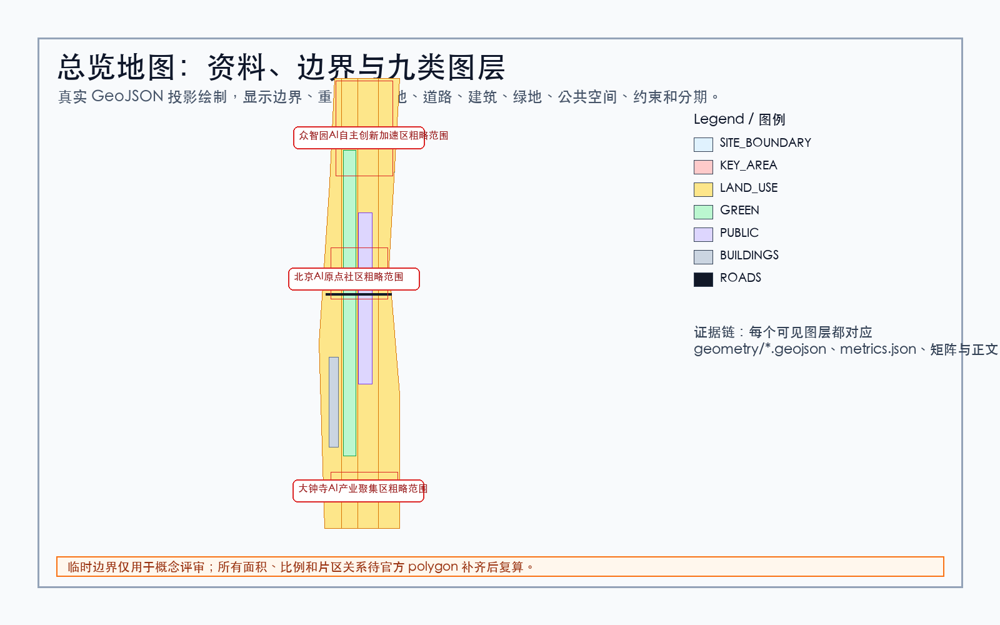
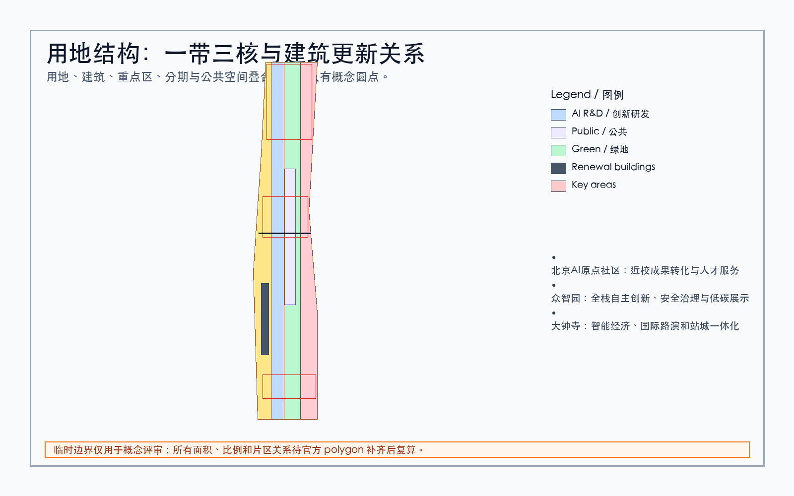
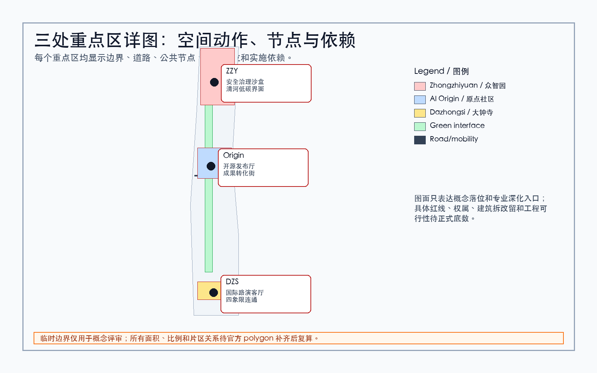
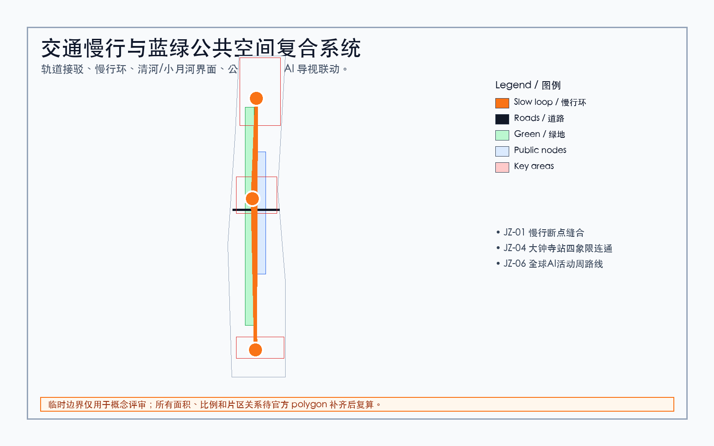
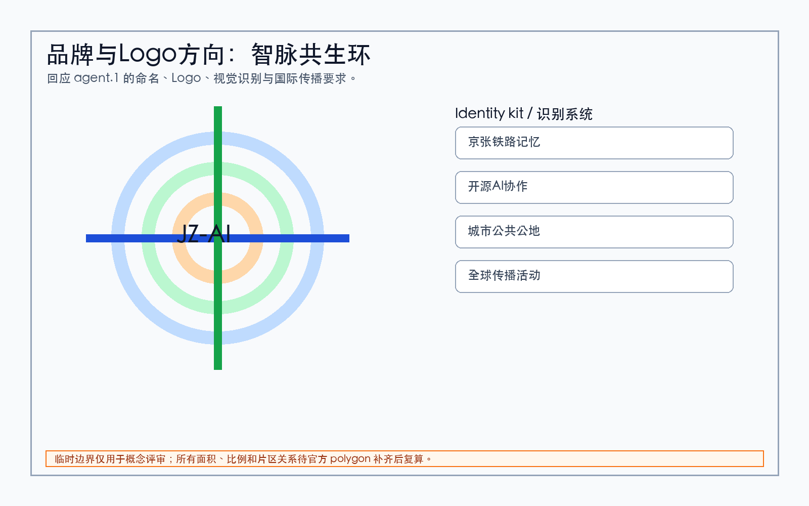
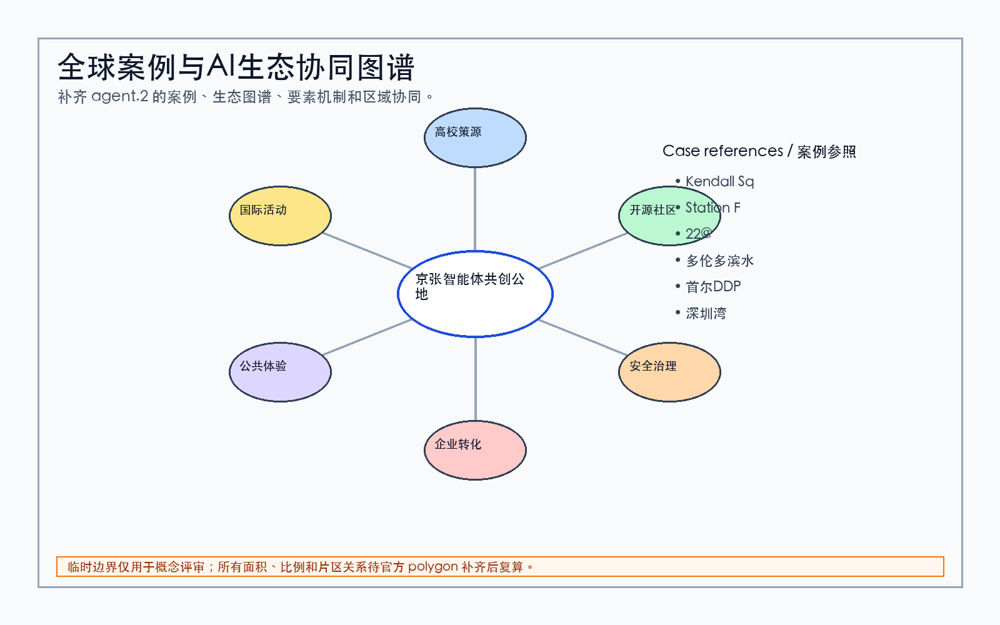
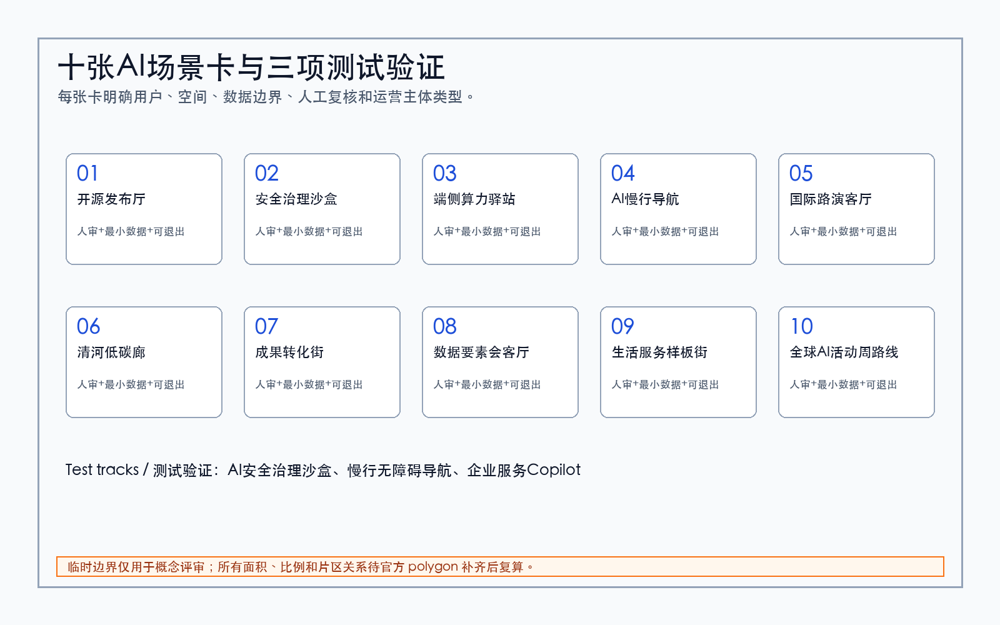
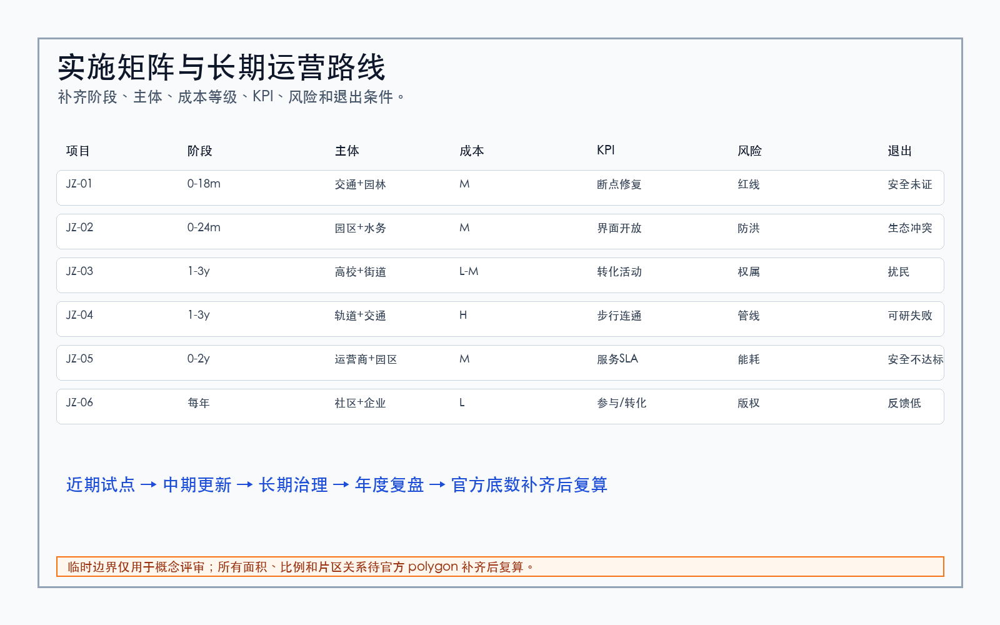
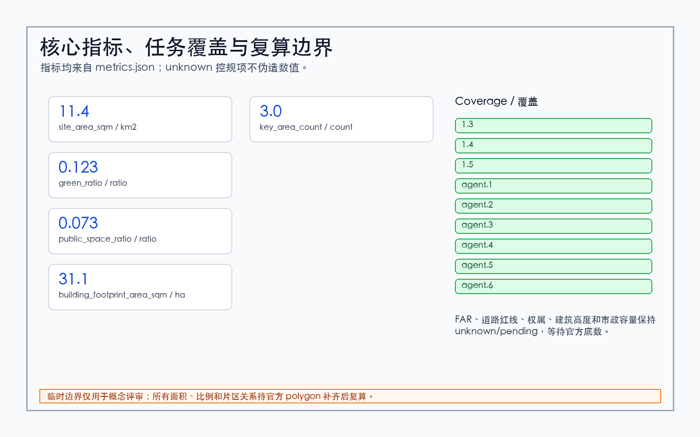

总览地图

用地分区

重点区域

交通慢行 / 蓝绿公共空间

Logo / 品牌

生态协同

AI 场景

更新项目

核心指标

核心指标
11.41 km2
site_area_sqm
0.123
green_ratio
0.073
public_space_ratio
任务覆盖
1.31.41.5agent.1agent.2agent.3agent.4agent.5agent.6
自检状态
PASS after deterministic validation, spatial review, visual review, and professional evidence review.
来源
SITE-PACKAGE, SOURCE-REGISTRY, OFFICIAL-ANNOUNCEMENT, AGENT-TASKBOOK, generated asset inventory.
假设
临时边界仅用于概念评审；正式 polygon 和专业底数补齐后必须整体复算。